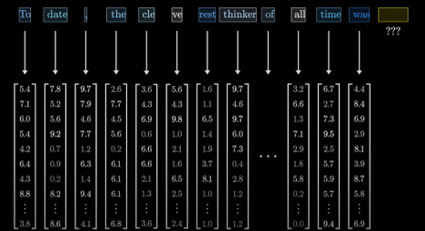
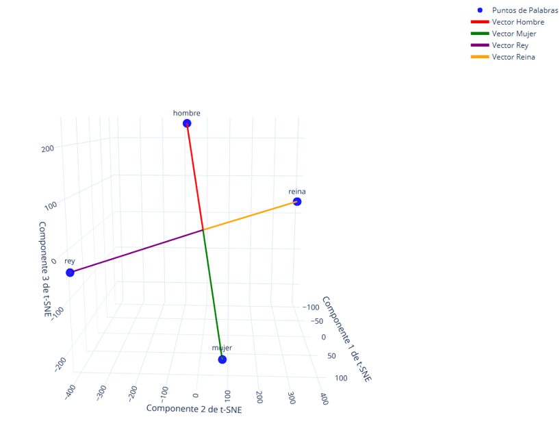
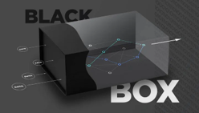
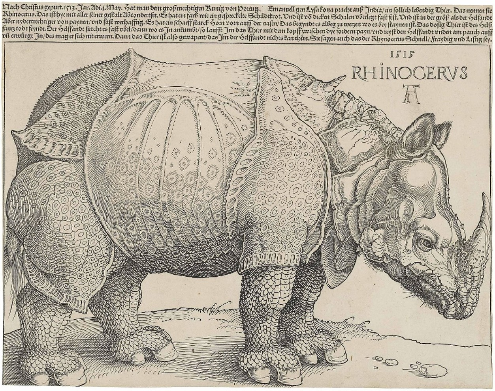
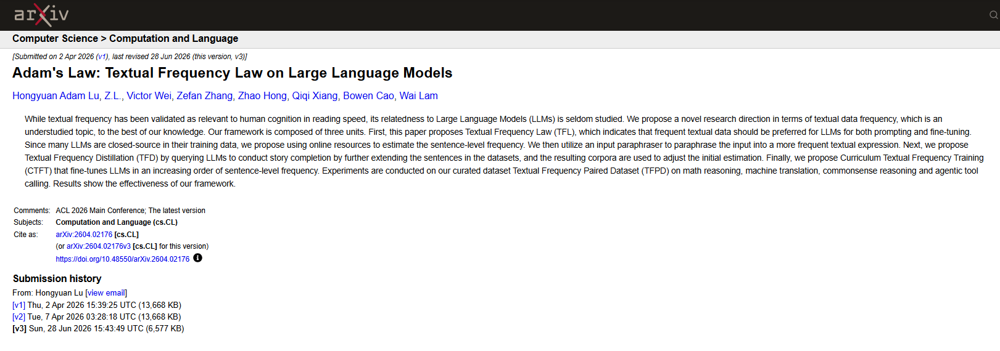
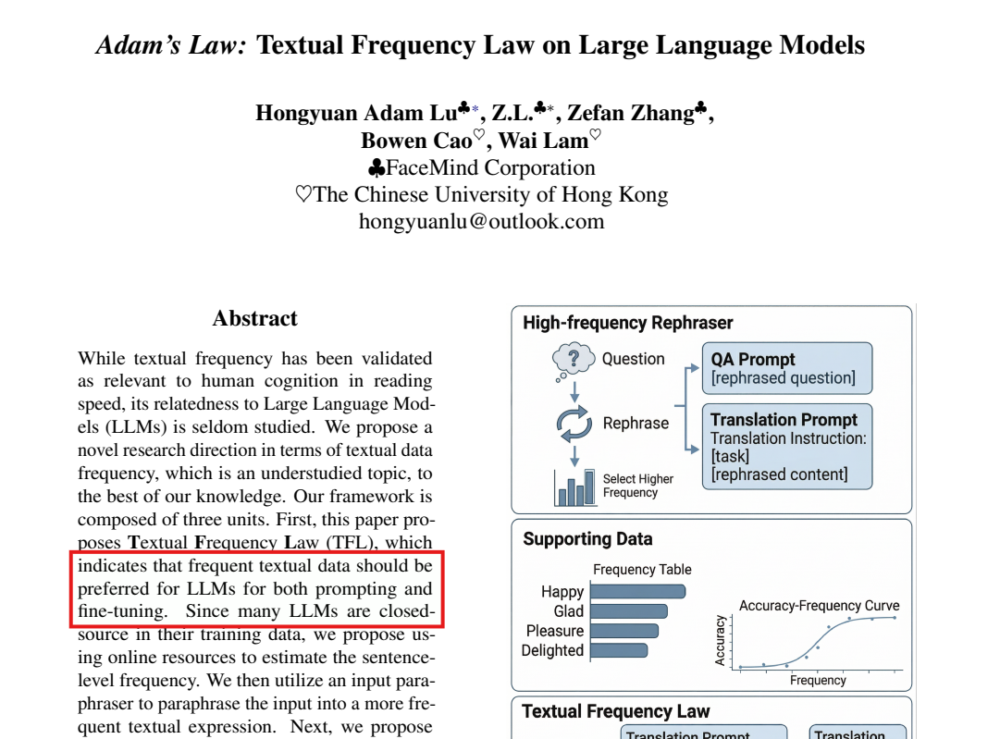

La IA aplicada a investigar mercados · Máster Universitario en Negocios Internacionales
Luis Esteve ElfauUPF Barcelona School of Management · lunes 16/11/2026
sesión de ia · módulo 0
Contenido
concepto
Qué es (y qué no es) la IA generativa
crear, no solo clasificar
funcionamiento
Cómo funciona un LLM por dentro
tokens, significado y predicción; sin fórmulas
límites
Dónde se equivoca y por qué
alucinaciones, sesgos y la caja negra
criterio
La responsabilidad no se delega
human in the loop, siempre
evolución
De responder a actuar
chat, copiloto, agente: el puente a la IA para investigar
02 · aperturasesión de ia · ia generativa · muibal
“
La llegada de esta inteligencia, la IA general y después la superinteligencia, es lo más importante que va a pasar en la sociedad humana en unos 500 años, quizá en 1.000.
TED2025, "The AI Revolution Is Underhyped" (abril de 2025). Eric Schmidt, ex consejero delegado y expresidente ejecutivo de Google.
“
La IA está muy lejos de ser tan inteligente como los humanos, difícilmente llega a la inteligencia de un gato.
"AI Needs PHYSICS to EVOLVE", This Is The World (YouTube), marzo de 2025. Yann LeCun, profesor de la Universidad de Nueva York; entonces científico jefe de IA en Meta.
03 · aperturasesión de ia · ia generativa · muibal
3000 a.C.
Una mecha. Grasa animal. Humo.
Siglo V
Cae Roma. Arde lo que sobra de la cocina.
Edad Media
Luz limpia, aroma noble. Solo para reyes y altares.
Siglo XIX
La química democratiza la luz.
27 de enero de 1880
Edison patenta otra cosa.
Siglo XX → hoy
Se le encendió la bombilla.
La vela no desaparece: cambia de oficio.
No se inventó la bombilla iterando una vela.
El hilo conductor del módulo
04 · ia generativasesión de ia · ia generativa · muibal
El zumo de limón
Cuidado con el pico de la confianza.
En 1995, McArthur Wheeler atracó dos bancos a cara descubierta, convencido de que el zumo de limón en la cara lo hacía invisible a las cámaras.
No era estúpido. Era algo peor: no sabía lo que no sabía.
En 1999, Dunning y Kruger publican «Unskilled and Unaware of It: How Difficulties in Recognizing One's Own Incompetence Lead to Inflated Self-Assessments» y le ponen nombre al efecto.
07 · ia generativasesión de ia · ia generativa · muibal
la curva, en versión IA
Así empezamos casi todos
el pico de la estupidez
Nos creemos expertos
Así estamos muchos al principio: en el pico de la confianza. Un par de prompts y ya nos creemos expertos.
Pero así es como nos ve alguien con años de oficio.
visto desde el otro lado de la curva · vídeo: BBC
08 · ia generativasesión de ia · ia generativa · muibal
definición
Crear, no solo clasificar
La IA lleva décadas entre nosotros: detecta fraude, recomienda películas, lee matrículas. Lo nuevo de la generativa es que crea contenido (texto, imágenes, código) en vez de solo ordenar o predecir sobre lo que ya existe. Y, sobre todo, que ahora cualquiera la puede usar como si hablara con una persona.
IA de siempre
Clasifica, predice, detecta
"Esta transacción parece un fraude." Lleva décadas dentro de productos que ya usáis, ordenando y puntuando lo que ya existe.
IA generativa
Genera contenido nuevo
"Redáctame el resumen ejecutivo de este informe sectorial." Crea a partir de una instrucción y es accesible a cualquiera desde 2022.
09 · ia generativasesión de ia · ia generativa · muibal
cómo lee
Lo trocea todo en tokens
Antes de predecir nada, el modelo trocea lo que le das en piezas pequeñas, los tokens, y convierte cada una en una lista de números. Trabaja con esos números, no con las palabras.
el texto se trocea en piezas, los tokenslanotadeprensadelamarca
y cada token es, por dentro, números0.81-0.200.470.05-0.930.62
Y ya no es solo texto: los modelos de hoy son multimodales (texto, imagen, audio, vídeo), con enfoques distintos por dentro, como los modelos de difusión para imagen. No veis lo que pasa dentro, pero el comportamiento siempre es probabilístico.
10 · ia generativasesión de ia · ia generativa · muibal
cómo guarda el significado
De token a significado: los embeddings
Cada token no se queda en un número suelto: se convierte en un embedding, una lista larga de números (un vector) que lo sitúa en un mapa de significado.
marca→0.81-0.200.470.05-0.93…
enseña→0.78-0.150.500.02-0.90…casi el mismo vector: significan casi lo mismo

cada token, convertido en un vector · figura: 3Blue1Brown, «But what is a GPT?»
Palabras con significado parecido caen cerca en ese mapa. Así el modelo captura el sentido con pura geometría, sin entender nada como nosotros.
Para hacerse una idea del tamaño: en GPT-3, cada token es un vector de 12.288 números y maneja 2.048 tokens de contexto. Hoy los vectores son aún mayores (hasta unas 16.000 dimensiones) y el contexto ha pasado a cientos de miles, incluso millones, de tokens.
11 · ia generativasesión de ia · ia generativa · muibal
un ejemplo que se ve
Significado hecho geometría

proyección de embeddings (t-SNE) · hombre, mujer, rey, reina
rey menos hombre más mujer se acerca a reina
El modelo no sabe qué es un rey
Sabe que su vector se relaciona con los de hombre, mujer y reina de forma medible. En el espacio original del modelo, la misma resta que lleva de hombre a mujer lleva de rey a reina; esta proyección en 3D solo da una idea aproximada. Puro cálculo sobre números y, aun así, captura el significado.
12 · ia generativasesión de ia · ia generativa · muibal
cómo decide
Una máquina de predecir la siguiente palabra
Detrás de ChatGPT, Claude, Gemini o Copilot hay un LLM, un modelo entrenado leyendo cantidades enormes de texto. Cuando le escribís, no consulta una base de datos: predice, palabra a palabra, qué es lo más probable que venga después. Esa es toda la magia, y también todos los límites.
Probabilístico
Elige lo más probable, no lo verdadero. Por eso suena seguro hasta cuando se equivoca.
No determinista
La misma pregunta puede dar respuestas distintas. Bien para redactar o proponer ideas, peligroso si esperáis un dato exacto siempre igual.
cómo el modelo elige la siguiente palabra entre varias opciones probables · clip: 3Blue1Brown, «But what is a GPT?»
13 · ia generativasesión de ia · ia generativa · muibal
la prueba
La misma conversación, hace unos meses
Sin embargo, os quiero mostrar algo: la misma conversación con un asistente de IA, con solo unos meses de diferencia.
la pregunta
Un hombre vive en un décimo piso de un edificio. Cada día coge el ascensor hasta la planta baja para dirigirse al trabajo o para ir de compras. Cuando regresa siempre sube en el ascensor hasta el séptimo piso y luego sube por la escalera los 3 pisos que quedan hasta llegar a su apartamento, el décimo. ¿Por qué lo hace?
la respuesta del modelo
Hay un par de posibles razones por las que el hombre hace esto:
Es demasiado bajo para alcanzar el botón del décimo piso. Si es un niño o una persona de baja estatura, puede que solo llegue al botón del séptimo piso.
Tiene algún tipo de discapacidad. Podría ser una discapacidad que le impida alcanzar los botones más altos, pero que aún le permita subir escaleras.
Está llevando muchas cosas. Si viene de compras o del trabajo con las manos ocupadas, podría serle más fácil bajarse en el séptimo piso y subir las escaleras que intentar maniobrar dentro del ascensor con todo.
Es una persona que necesita hacer ejercicio. Puede que use las escaleras para hacer un poco de ejercicio extra cada día.
14 · ia generativasesión de ia · ia generativa · muibal
la prueba
La misma conversación, hace unos meses
la pregunta
Un hombre vive en un séptimo piso de un edificio. Cada día coge el ascensor hasta la planta baja para dirigirse al trabajo o para ir de compras. Cuando regresa siempre sube en el ascensor hasta el séptimo piso hasta llegar a su apartamento, el séptimo. ¿Por qué lo hace?
la respuesta del modelo
Es un niño. No llega a los botones del ascensor de los pisos superiores.
15 · ia generativasesión de ia · ia generativa · muibal
la prueba
La misma conversación, hoy
la pregunta
Un hombre vive en un décimo piso de un edificio. Cada día coge el ascensor hasta la planta baja para dirigirse al trabajo o para ir de compras. Cuando regresa siempre sube en el ascensor hasta el séptimo piso y luego sube por la escalera los 3 pisos que quedan hasta llegar a su apartamento, el décimo. ¿Por qué lo hace?
la respuesta de Claude (transcrita)
Es el clásico acertijo: el hombre es de baja estatura (una persona pequeña). Cuando baja, no tiene problema porque el botón de la planta baja está abajo del panel y lo alcanza sin dificultad. Pero cuando sube, solo llega hasta el botón del séptimo piso; los botones del 8, 9 y 10 quedan demasiado altos para él. Por eso baja en el séptimo y sube los tres pisos restantes por la escalera.
La variante habitual del acertijo añade que los días de lluvia sí sube hasta el décimo… porque lleva paraguas y con él puede pulsar el botón.
16 · ia generativasesión de ia · ia generativa · muibal
la prueba
La misma conversación, hoy
la pregunta
Un hombre vive en un séptimo piso de un edificio. Cada día coge el ascensor hasta la planta baja para dirigirse al trabajo o para ir de compras. Cuando regresa siempre sube en el ascensor hasta el séptimo piso hasta llegar a su apartamento, el séptimo. ¿Por qué lo hace?
la respuesta de Claude (31/10/2026, transcrita)
Tal como lo planteas, no hay ningún misterio: sube hasta el séptimo porque vive en el séptimo.
Parece una variante del acertijo clásico. En el original, el hombre vive en el décimo, sube en ascensor solo hasta el séptimo y hace a pie los tres pisos que faltan. Allí la respuesta es que es de baja estatura y no llega a los botones más altos; los días de lluvia sí sube hasta el décimo, porque pulsa el botón con el paraguas.
En tu versión has quitado la parte rara, así que la única respuesta es la obvia.
17 · ia generativasesión de ia · ia generativa · muibal
la conclusión
Hay quien sostiene que la tecnología detrás de los LLM, los transformers, tiene techo. Y aun así no deja de evolucionar.
Yann LeCun tiene razón en muchas cosas. Pero la expresión de los escépticos, los «loros estocásticos» (Bender, Gebru y otras, 2021), cada vez se sostiene menos.
18 · ia generativasesión de ia · ia generativa · muibal
el riesgo que conviene entender
La caja negra

fuente: bluetickconsultants.medium.com
¿es una caja negra? sí y no
Sí porque:
Tiene millones o miles de millones de parámetros (pesos). 175.000 millones en GPT-3.
Es difícil saber por qué tomó cierta decisión en un caso específico.
No tiene una lógica simbólica explícita, como una regla o un algoritmo tradicional.
19 · ia generativasesión de ia · ia generativa · muibal
el riesgo que conviene entender
La caja negra
fuente: bluetickconsultants.medium.com
¿es una caja negra? sí y no
No porque:
Sabemos cómo funciona cada capa (matemáticamente).
Podemos visualizar pesos, activaciones y gradientes.
Hay técnicas de interpretación.
20 · ia generativasesión de ia · ia generativa · muibal
el riesgo que conviene entender
La caja negra
fuente: bluetickconsultants.medium.com
¿es una caja negra? en resumen
No es una caja negra por ignorancia, sino por complejidad.
21 · ia generativasesión de ia · ia generativa · muibal
el riesgo que conviene entender
¿Qué es una alucinación?
cuando inventa, lo hace con total seguridad · imagen generada con IA
respuestas plausibles, falsas
Una alucinación en IA ocurre cuando un modelo genera una respuesta que parece plausible o coherente, pero es falsa, incorrecta o no está basada en datos reales.
Causas comunes:
Falta de información específica en los datos de entrenamiento. (no depende de vosotros)
Predicción estadística basada en patrones comunes, no en hechos. (no depende de vosotros)
Ambigüedad en la pregunta o contexto insuficiente. (esto sí depende de vosotros: un buen prompt lo minimiza)
22 · ia generativasesión de ia · ia generativa · muibal
una lección de hace 500 años
El rinoceronte de Durero

Alberto Durero · grabado · 1515 · dominio público
datos malos, error con autoridad
Lo dibujó sin haber visto ninguno
En 1515 Durero grabó este rinoceronte solo a partir de una descripción y un boceto de otra persona. Le puso una placa de armadura en el lomo y escamas de más.
El grabado era precioso y convincente, y se copió como bueno durante casi 300 años. Una IA entrenada con datos malos hace lo mismo: repite el error con total autoridad.
23 · ia generativasesión de ia · ia generativa · muibal
otro riesgo que conviene entender
Los sesgos
sesgo
Un sesgo es una preferencia sistemática o inclinación que aparece en las predicciones del modelo, generalmente como resultado de los datos con los que fue entrenado.
Causas comunes:
Datos de entrenamiento
El modelo hereda los desequilibrios de aquello con lo que se entrenó.
Diseño del modelo
Cómo se construye y qué se optimiza también introduce inclinaciones.
Interacción con los usuarios
Los LLM pueden amplificar un sesgo si el prompt del usuario ya lo trae. Ej.: "escribe por qué las mujeres no son buenas en matemáticas".
24 · ia generativasesión de ia · ia generativa · muibal
cómo se controla
Human in the loop
Es un enfoque en el desarrollo y uso de sistemas de inteligencia artificial en el que las personas participan activamente en una o varias etapas del proceso, ya sea para entrenar, supervisar, validar o corregir las decisiones de la IA.
Entrenar
Las personas aportan y etiquetan los ejemplos con los que el modelo aprende.
Supervisar
Alguien vigila lo que hace el sistema mientras trabaja, no lo deja suelto.
Validar
Nada crítico sale sin que una persona lo revise y lo firme. La IA propone, tú validas.
Corregir
Cuando se equivoca, la persona lo corrige y esa corrección mejora el sistema.
25 · ia generativasesión de ia · ia generativa · muibal
cómo ha evolucionado
De responder a actuar
Aquí vuelve la metáfora del principio. La IA generativa empezó como un chat al que preguntas. Luego entró en tus herramientas como copiloto. Ahora llegan los agentes, que ejecutan tareas de varios pasos con supervisión. En 2026 ya están aquí: lo veréis en el bloque 3 de esta misma sesión, con la investigación profunda.
vela
Chat
Preguntas y respondes tú. Ejemplo: "resúmeme este informe de tendencias".
bombilla
Copiloto
Trabaja contigo dentro de tu flujo. Ejemplo: el asistente que te propone la respuesta dentro del correo.
luz inteligente
Agente
Percibe, decide y actúa hacia un objetivo, con supervisión. Ejemplo: buscar fuentes sobre un sector, leerlas y devolver un informe con las referencias.
aquí estamos
red
Subagentes
Varios agentes coordinados para un proceso entero. Ejemplo: vigilar cada mañana lo que se publica de una marca, clasificarlo y avisar si algo cambia.
26 · ia generativasesión de ia · ia generativa · muibal
la habilidad clave
Prompt
No es magia, es ser claro
Un prompt es lo que le escribís al modelo, la instrucción. La mayor parte de la frustración con la IA viene de pedirle mal las cosas. Con cuatro o cinco hábitos, los resultados cambian de nivel. Pensad que le habláis a un compañero nuevo, muy rápido pero sin contexto.
Sed específicos
Decid el qué, el para quién y el formato. "Una tabla", "tres frases", "tono directo".
Dadle un rol
"Actúa como analista de investigación de mercados", "como tutora de un TFM".
Dadle contexto
Pegad el documento, los datos, el ejemplo. El contexto manda.
Poned ejemplos
Enseñadle uno o dos del resultado que queréis y lo imita.
Pedid que vaya paso a paso
Para cálculos o decisiones, "piénsalo paso a paso" mejora el acierto.
27 · ia generativasesión de ia · ia generativa · muibal
ejemplo
La misma tarea, dos resultados
prompt pobre"sácame los datos de estas fichas de importadores"
prompt bueno
Quiero que extraigas la información de cada ficha de importador y la presentes en este formato:
Ficha: "Distribuidora familiar con sede en Lyon. Importamos envases y menaje desechable para panaderías y obradores de la región."
Formato deseado:
País: Francia
Qué importa: envases y menaje desechable
Canal: panaderías y obradores
Ahora, haz lo mismo con esta otra ficha: [pegas otra ficha de importador]
28 · ia generativasesión de ia · ia generativa · muibal
un estudio reciente
Palabras simples, mejores respuestas


fuente: arxiv.org/abs/2604.02176
lo que apunta un estudio
Habladle sencillo
A pesar de tantos manuales de prompting, un estudio de 2026 (preprint, sin revisión por pares) apunta a que los LLM responden mejor cuando el prompt usa formulaciones frecuentes, las que más aparecen en los textos.
¿Os acordáis de la caja negra? No sabemos bien por qué pasa. Una hipótesis: el modelo ha visto muchas más veces las formulaciones corrientes que las rebuscadas, porque es lo que más escribimos los humanos.
29 · ia generativasesión de ia · ia generativa · muibal
un ejemplo del curso
IA + script + automatización
el caso
Revisar cada semana los artículos nuevos sobre el tema de vuestro TFM.
Paso 1
Usar la IA para escribir la fórmula
Le pedimos a la IA un script que consulte OpenAlex, una base abierta de artículos científicos, y baje título, resumen, revista y año de lo publicado esa semana con vuestras palabras clave. La generación no es determinista: puede escribirlo distinto cada vez, así que se prueba con una búsqueda conocida antes de darlo por bueno.
busca en OpenAlex con vuestras palabras clave
filtra por fecha: solo lo de la última semana
la IA marca cada resumen: relevante, dudoso o fuera de tema
escribe una fila por artículo en una hoja
esquema del script que escribe la IA
30 · ia generativasesión de ia · ia generativa · muibal
un ejemplo del curso
IA + script + automatización
el caso
Revisar cada semana los artículos nuevos sobre el tema de vuestro TFM.
Paso 2
Usar una automatización estándar
Una herramienta de automatización (Make, n8n o Zapier) ejecuta el script cada lunes y añade lo nuevo a la hoja. La IA hace la parte difícil una vez; el flujo hace la parte repetitiva siempre igual. Leer los artículos marcados sigue siendo cosa vuestra.
cada lunes
ejecuta la búsqueda en OpenAlex
añade a la hoja los artículos nuevos: fecha, revista, título, enlace y la marca de la IA
esquema del flujo, en cualquier herramienta de automatización
31 · ia generativasesión de ia · ia generativa · muibal
lo que nadie cuenta
Encender una bombilla no es iluminar el edificio
95 %
de los pilotos de IA generativa en empresas no logran un retorno medible, según un informe preliminar con una muestra pequeña (MIT NANDA, «The GenAI Divide», julio de 2025). El modelo no es el problema: es el dato y el flujo.
la demo
Enciende la bombilla
Un caso, datos preparados, alguien delante. Impresiona en cinco minutos y no vuelve a verse.
producción
Ilumina el edificio
Todos los casos, datos reales y sucios, sin nadie vigilando, cada día. Ahí es donde casi todo se cae.
32 · ia generativasesión de ia · ia generativa · muibal
El mensaje que nos llevamos
Más luz, menos humo.
La vela no desaparece: cambia de oficio.
Seguimos
Ahora · La IA para investigar: prompts, documentos y agentes
índice · pulsa ESC o M para volver
Salto rápido
←→ avanzar · M / ESC índice · F pantalla completa · N presentador